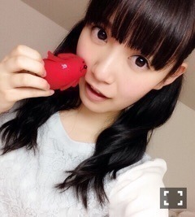

| 2015/10 02 Fri | ひめたん-0o0-その577 |
パナソニック充電池
「応援力チャージプロジェクト」始動！
LEDスティックライトを
パナソニック充電池にして、
ライブをもっとエコにしていこう！という
ものです(´｡•ω•｡`)
限定ライブもやるみたい！
詳しくは特設サイトを
チェックしてみてください。
生田、生駒、秋元、飛鳥、中田、中元の
プロジェクト限定ムービーなんかも
撮ったので観てみてね～＊
日曜の夜はらじらー！サンデー
ゲストは声優アーツに戸松遥さん、
乃木坂46から堀未央奈ちゃん、
北野日奈子ちゃん、中田花奈ちゃん、
寺田蘭世ちゃんが登場。
■私たちへのメッセージ・質問
■新ユニット名大募集
■アンダーライブ勝手に大予想
おたよりお待ちしています！
もちろんレギュラーコーナーにも
どんどん送ってくださいね～＊
たくさん質問があったので
出演時間についてお話ししておきますね
いつもとは違う
イレギュラーな形になります
20:05～の番組オープニングに登場、
その後声優アーツのコーナーお休みして
21:17～からの乃木坂コーナーにて
再び登場するという感じです！
新曲の初解禁もあります！
いつかかるかわからないから
最初から最後まで聞いてね。

きゃー♡
蘭世かわいいよー♡
乃木坂回では
高校生が来てくれるの
はじめてですね！
あのメンバーの中では蘭世だけ
一緒にラジオ出たことないから初かも。
いや～楽しみ～♡
らじらーがスタートして、早半年。
毎回いろんなことに挑戦しながら
楽しくお送りしていますがいかがですか？
この番組の魅力は、良い意味で
ラジオという枠に
とらわれていないところかなと
思っています(´｡•ω•｡`)
これからもよろしくね！
NHKラジオ第一
「らじらー！サンデー」
20:05～22:59
スマホで聞く場合は
アプリ「らじるらじる」を
ダウンロードしてみてくださいね☆
番組ホームページはこちら↓

今日は舞台
「すべての犬は天国へ行く」を
観てきました！
堂々と、キラキラしてた！
舞台の上のみんなは
アイドルではなく舞台女優さんだったよ！
笑いあり、ハードなシーンありの
シリアスコメディという
ジャンルだそうです。
連日公演が続きますが
最後まで怪我なく
完走できますように( ˇωˇ )
アンダーライブももう少しで本番ですね！
がんばるぞ！
～雑誌情報～
＊9/30 ブブカ11月号
＊10/9 UTB+
＊10/9 ファインボーイズ
＊10/6 TopYell
＊10/9 ボム
＊10/31 ブブカ12月号
ブブカ11月号発売中です！
あれ、まーたあすかちゃんだ。
今日はあすかちゃんがいっぱいだ。
前回、前々回と
日記の連投失礼しました／(^o^)＼
ユニットのこと早く言いたかったから
みなさんに喜んでもらえて
私も嬉しいです！
みんなと一緒にいると
熱い人間の集まりだなあと
つくづく思います。笑
ユニット名楽しみ～♪
最後にブブカのも一枚。

ツインじゃないひめたんも
そろそろ見慣れてきた？？
(＊´・ω・＊)
コメント(832)
2015/10/02 00:06